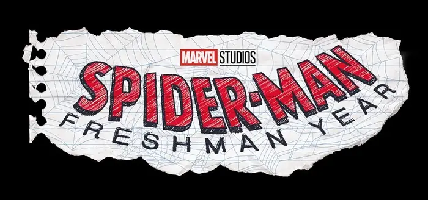
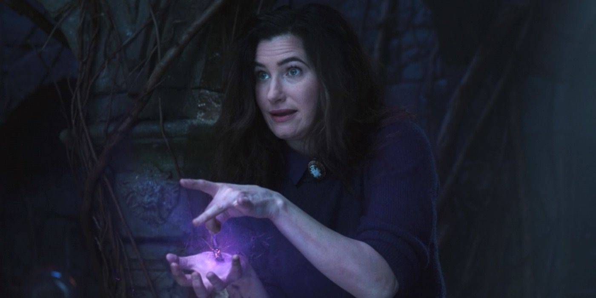
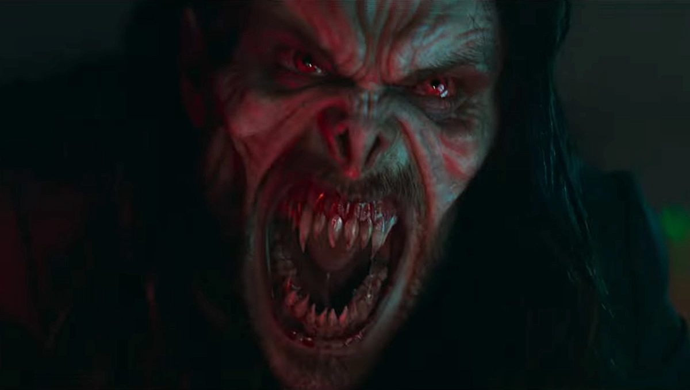
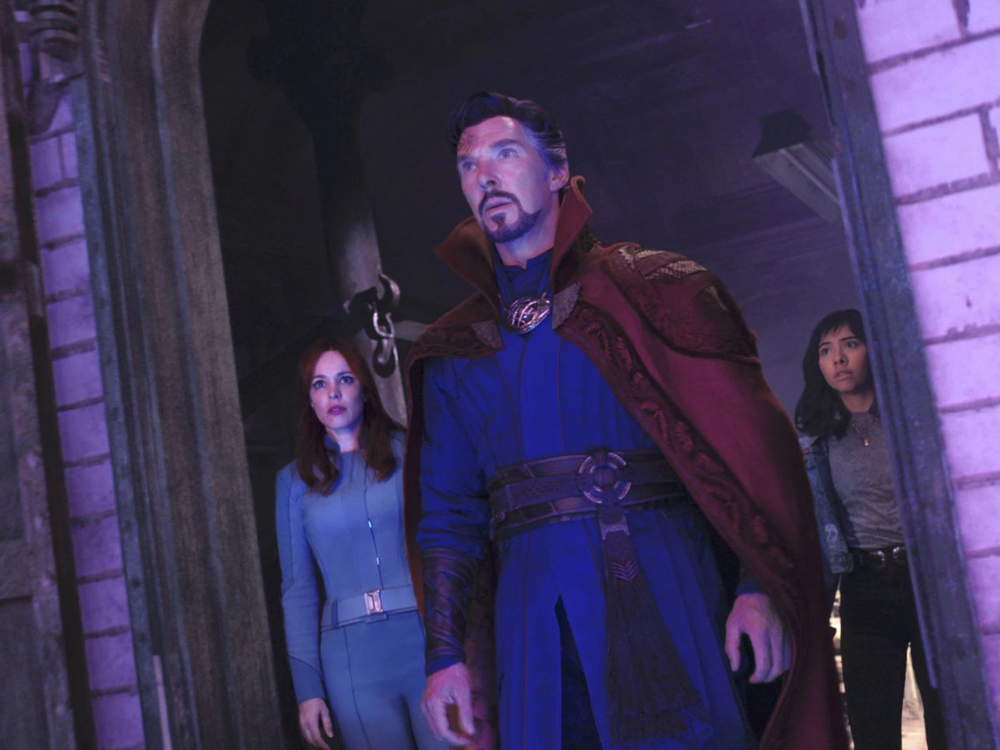

Best Upcoming Movies & Shows

Spider-Man: Freshman Year (Not Determined)
This will be fun to see, it only has been announced and the fact that it is animated excited me. Can it keep up with Spider-Man: Into the Spider-Verse

Moonknight (March 30)
Okay. If you have not watched the trailer for this I am disappointed. This will be AWESOME. Hopefully it does not disappoint

Agatha: House of Harkness (2024)
I have not watched WandaVision yet, but I guess Agatha appears and now they are putting her on show.

Morbius (March 31)
Comes out at the end of March. I can't wait to watch this. They are finally bringing in the 'Dracula' of the MCU

Doctor Strange: Multiverse of Madness (May 6)
Continuing on what happened in Spider-Man No Way Home. As well as what has been going on WandaVision. Hopefully we see a lot of new characters. I heard there will be so many cameos for this film, even more than Spider-Man No Way Home.